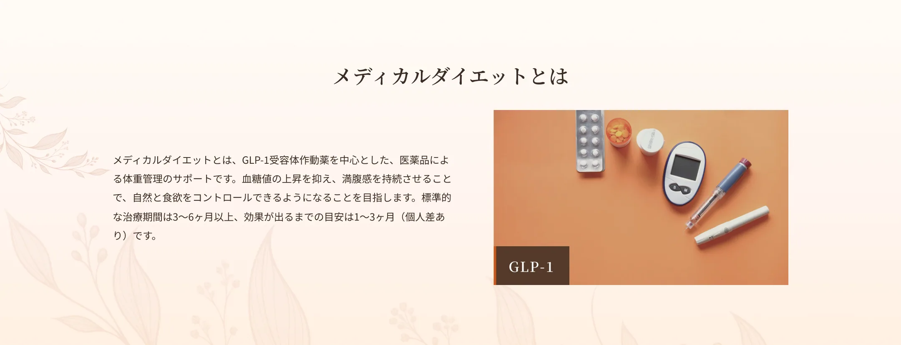
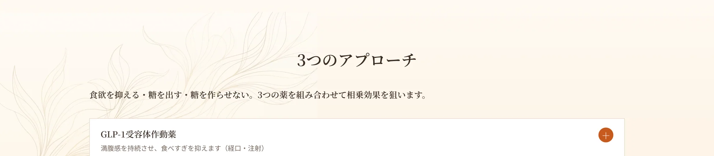
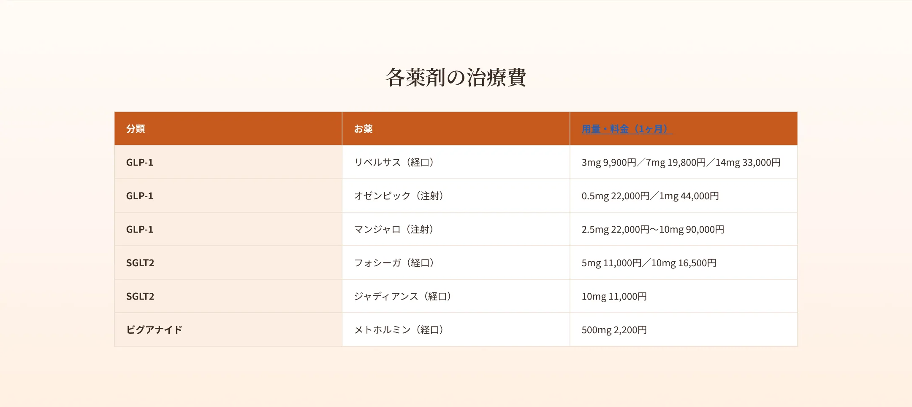
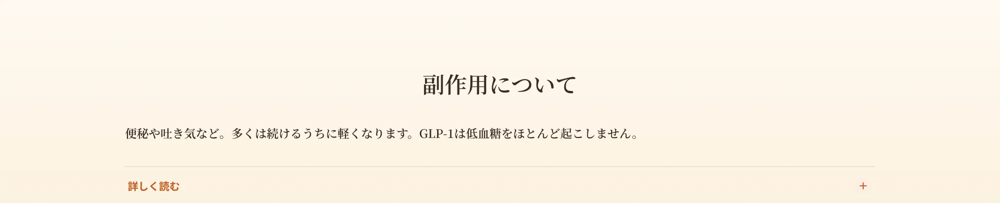
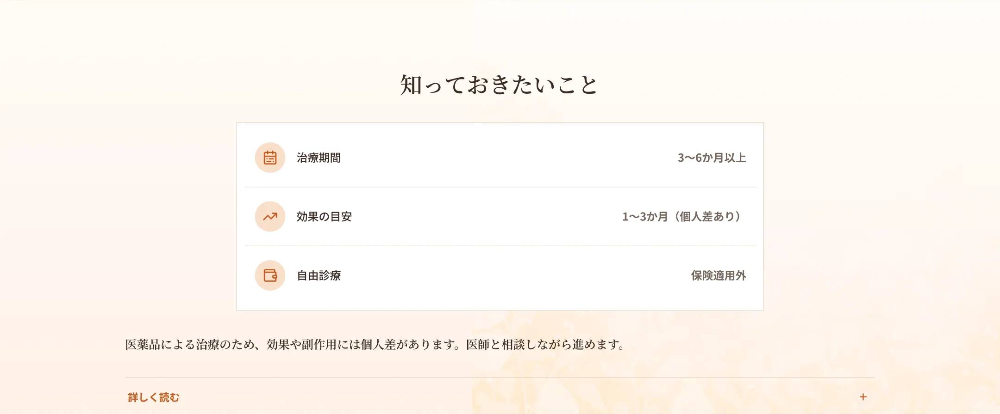
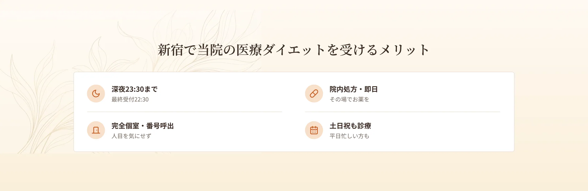
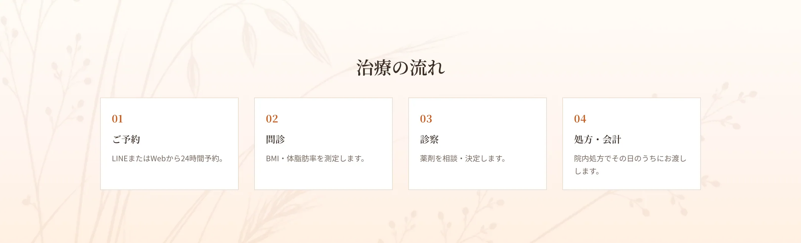
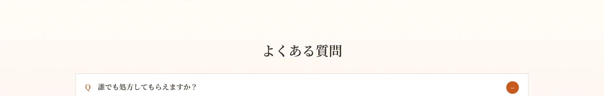

GLP-1は、もともと体内である程度分泌されている物質で、食後にインスリン分泌を促す働きがあります。GLP-1受容体作動薬は、このGLP-1と同じように働き、血糖値を下げる作用を示します。もとは糖尿病の治療薬ですが、食欲を抑え満腹感を持続させる効果から、ダイエットにも用いられるようになりました。経口薬または自己注射でGLP-1を補うことで、食べすぎの抑制が期待でき、少量で満足しやすくなります。食べ物の消化がゆっくりになることで血糖値の急上昇を防ぎ、脂肪分解と熱産生の促進により内臓脂肪の燃焼や基礎代謝の向上も期待できます。
SGLT2は、腎臓の近位尿細管で尿中の糖分の大部分を再吸収しています。SGLT2阻害薬はこの再吸収を抑え、糖を尿とともに体外へ排出します。血糖値を下げる効果のほか、体重減少効果、心疾患リスクの低減、腎保護効果などが報告されています。
ビグアナイド作動薬は、主に肝臓で新しい糖が作られるのを抑えて血糖値を下げる薬です。糖そのものを減らすため、体重を増やしにくいメリットがあります。肝臓以外にも、小腸での糖の吸収を抑える、筋肉での糖の利用を促すなどの作用で血糖値を下げます。


GLP-1薬剤は、特に懸念される低血糖の副作用がほとんど起きません（血糖が下がるとそれ以上下がりにくくなるため）。治療初期に便秘・吐き気・胃のむかつき・下痢などが現れることがありますが、継続するうちにだんだん軽くなり消えていくことが多いです。SGLT2阻害薬では、尿中に糖が出るため尿路や性器の感染症になりやすくなる、尿量が増えて脱水を起こすことがあるなどの注意点があり、適度な水分補給が大切です。ビグアナイド作動薬では、食欲不振・腹痛・下痢・吐き気などがみられることがあります。副作用には個人差があり、気になる症状があれば医師にご相談ください。

メディカルダイエットは、標準的な治療期間として3〜6ヶ月以上の継続が推奨されます。効果が出るまでの目安は1〜3ヶ月程度で、個人差があります。自由診療（保険適用外）のため、費用は全額自己負担となります。医薬品による治療であり、効果や副作用の現れ方には個人差があることをご理解のうえ、医師と相談しながら進めていきます。



A.BMIや健康状態を医師が確認し、適応を判断したうえで処方します。
A.経口薬（リベルサス・フォシーガ・メトホルミンなど）もあります。
A.目安は1〜3ヶ月で、個人差があります。
A.GLP-1薬剤は低血糖の副作用がほとんど起きないとされています。
A.深夜23:30まで（最終受付22:30）対応しています。